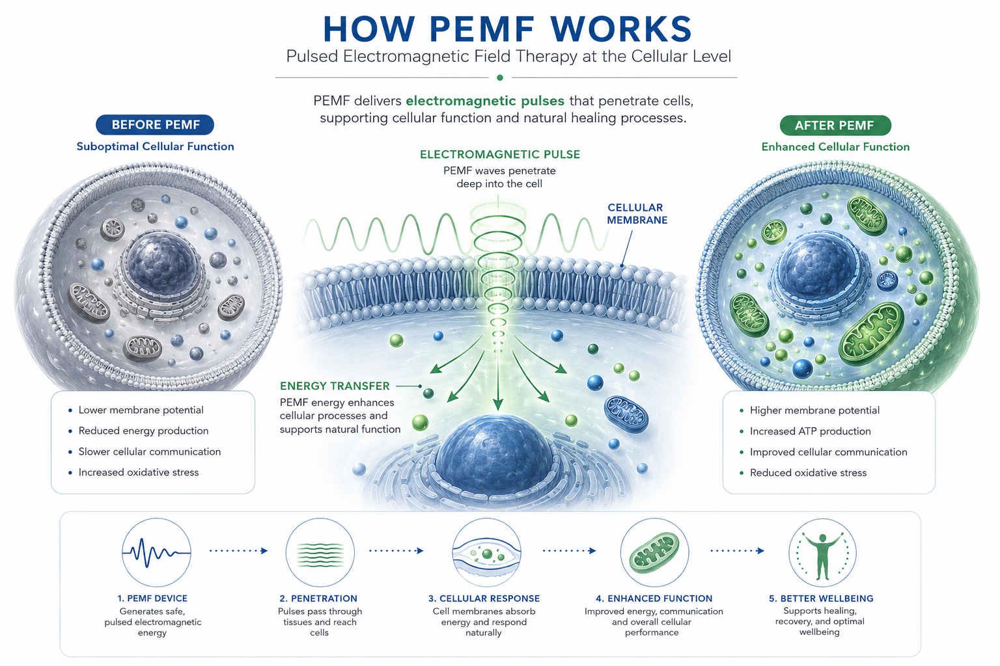
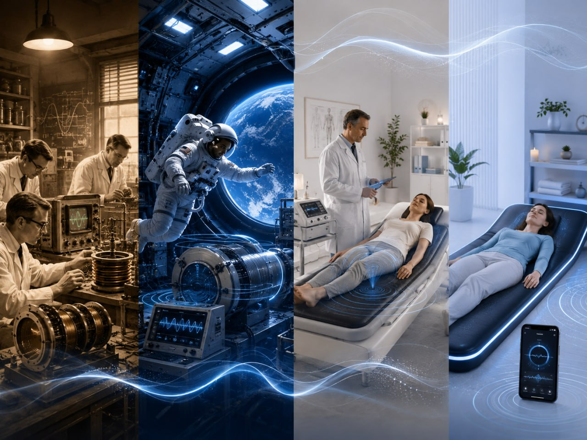

Education
Understanding PEMF Therapy
The science of cellular wellness, explained simply
What is PEMF?
PEMF stands for Pulsed Electromagnetic Field therapy. It's a non-invasive wellness technology that uses low-frequency electromagnetic pulses to support your body's natural cellular function.
Think of it as a gentle recharge for your cells. Just as your phone needs charging to function optimally, your cells benefit from supportive electromagnetic energy to maintain their natural electrical balance.
Click to learn more →
Click to Watch

The Basics
Your Body is Electric
Every cell communicates through electrical signals. This cellular electricity is essential for nutrient absorption, waste removal, energy production, and cellular repair.
Click to learn more →
Modern Challenges
Today's lifestyles expose us to factors that can disrupt natural cellular energy: electronic devices, stress, environmental toxins, and sedentary habits.
Click to learn more →
How PEMF Helps
PEMF delivers gentle electromagnetic pulses that mimic natural Earth frequencies, supporting cellular membrane potential and natural function.
Click to learn more →
Safe & Non-Invasive
PEMF therapy is generally considered safe for most people. The frequencies used are low-intensity and similar to natural Earth frequencies.
Click to learn more →
The History of PEMF
PEMF technology has decades of research and development behind it:
- 1960s-70s: Early electromagnetic research explores the effects of magnetic fields on biological systems
- 1980s: NASA conducts groundbreaking research on PEMF for astronaut health and bone density
- 1990s: European medical community adopts PEMF for various wellness applications
- 2000s-present: Consumer wellness devices become available, making PEMF accessible to the public
Today, PEMF therapy is used by athletes, wellness professionals, and health-conscious individuals worldwide as part of their wellness routines.

Research & StudiesReady to Learn More?
Discover how PEMF works at the cellular level and explore the benefits for your wellness goals.